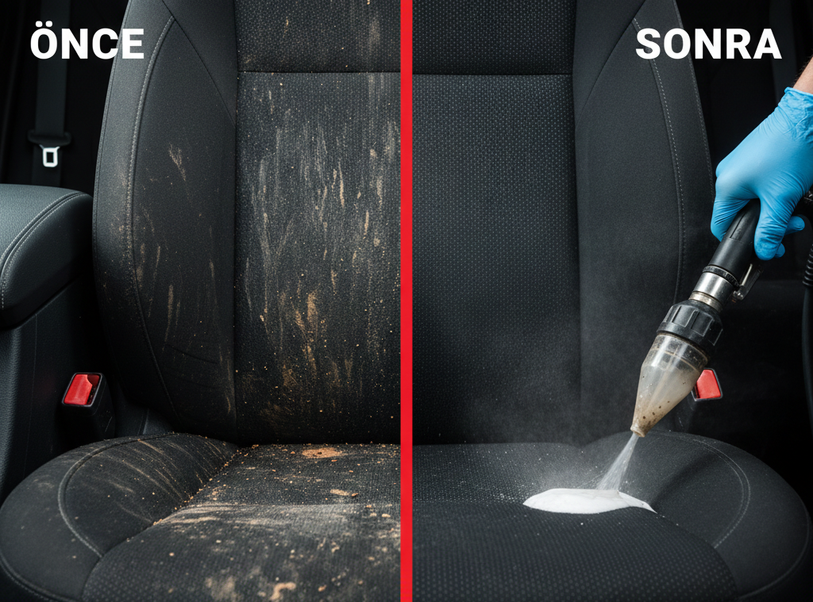

Neden Bizi Tercih Etmelisiniz?
Yılların verdiği deneyim ve son teknoloji ekipmanlarımızla size en iyi hizmeti sunmak için çalışıyoruz.

Önce & Sonra
Farkı kendi gözlerinizle görün. Fareyi veya parmağınızı görsel üzerinde kaydırın.
 SONRA
SONRA
 ÖNCE
ÖNCE
Müşteri Yorumları
Bizden hizmet alan mutlu müşterilerimiz neler söylüyor?
İletişime Geçin
Adres
Ihlamurkuyu Mahallesi, Çanakkale Caddesi Ümraniye / İstanbul
Çalışma Saatleri
24 Saat Açık